WORKSHOPS / EXHIBITIONS / COMMUNITY
Volunteering
Sharing what I build, helping others get started, and learning alongside other makers.
DEMONSTRATIONS & VOLUNTEERING / 2024–2026
Maker Faire
Mare Island / Vallejo, California
My first Maker Faire brought the robotics research, wearable cardiac monitor, and other university hardware projects out of the lab and onto the demonstration table.
In later presentations, I shared Sync Tank: aquarium networking, habitat monitoring, and the cameras and embedded systems behind it.
These demonstrations make room for questions about how the projects work and how they were built.

EXHIBITIONS & VOLUNTEERING / 2024–2026
Open Sauce
Daly City / San Mateo, California
Presenting Sync Tank to visitors and fellow builders: connected aquariums, articulated cameras, sensing hardware, and local software for observing aquatic habitats.
The booth brings the hardware and the live views together so people can explore the system and ask how it was built.

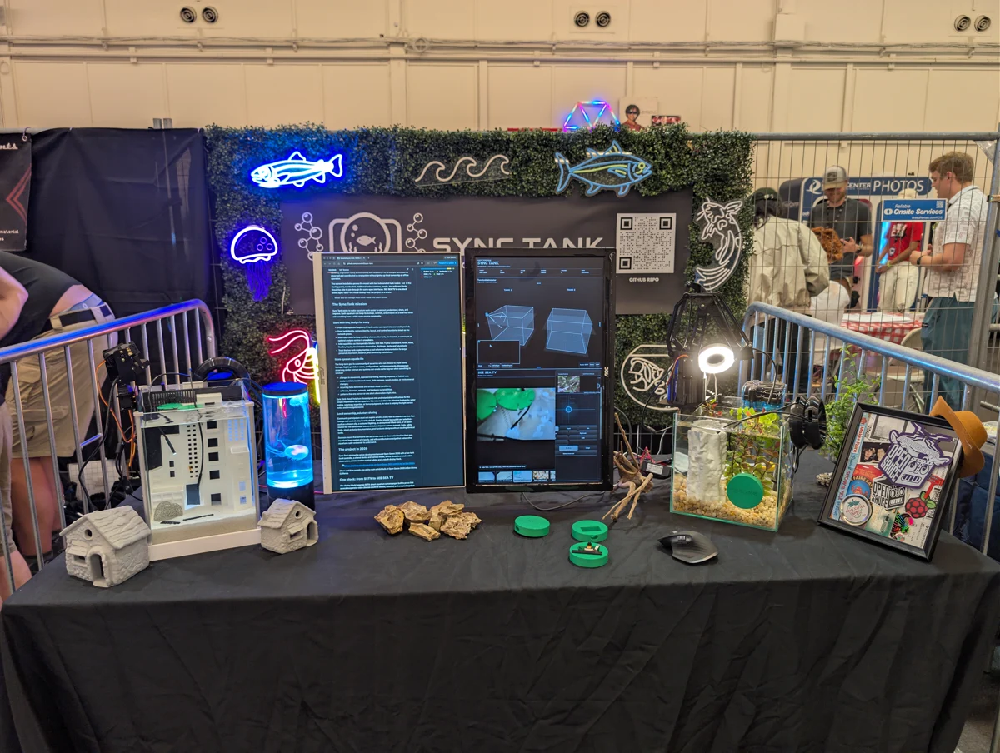

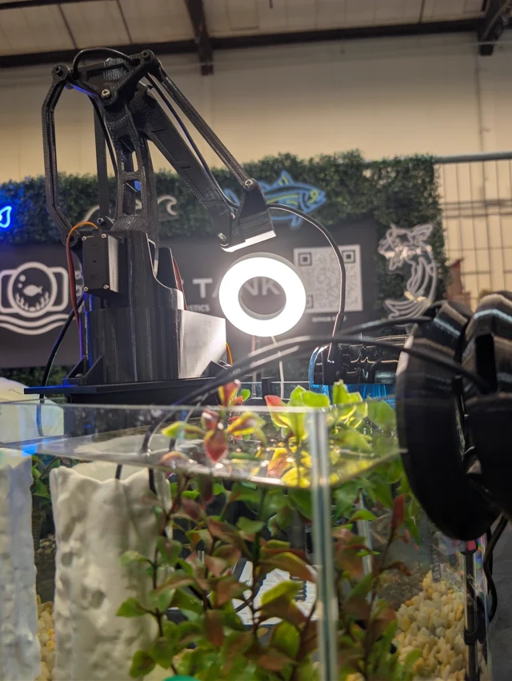

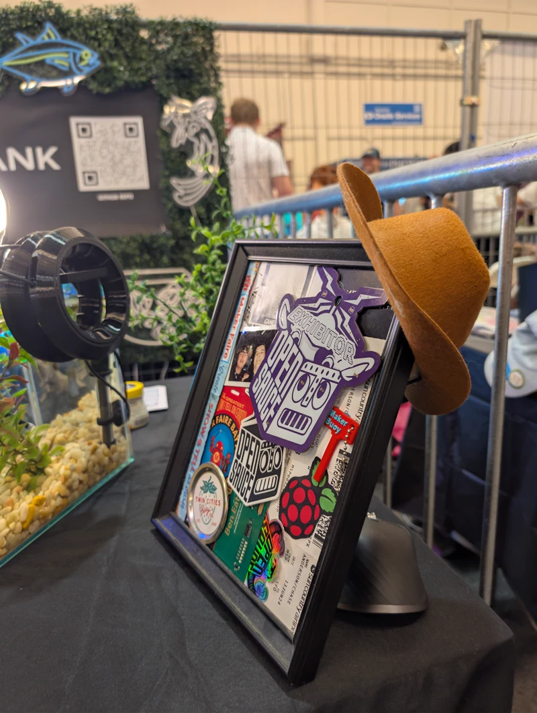
WORKSHOPS / MENTORSHIP / OUTREACH
IEEE
University of Minnesota / 2021–2024
IEEE International / 2023–2024
I served as Membership Coordinator, President, and Treasurer in the student chapter, organizing technical workshops, company collaborations, networking events, and community outreach.
We built circuit boards and drones, helped students get comfortable with electronics, and shared STEM demonstrations with the wider community, including the Bakken Museum.
IEEE International
I also volunteered on student benefits and educational webinars for mentors and student branch leaders, helping committee leaders connect with students and the international IEEE community.

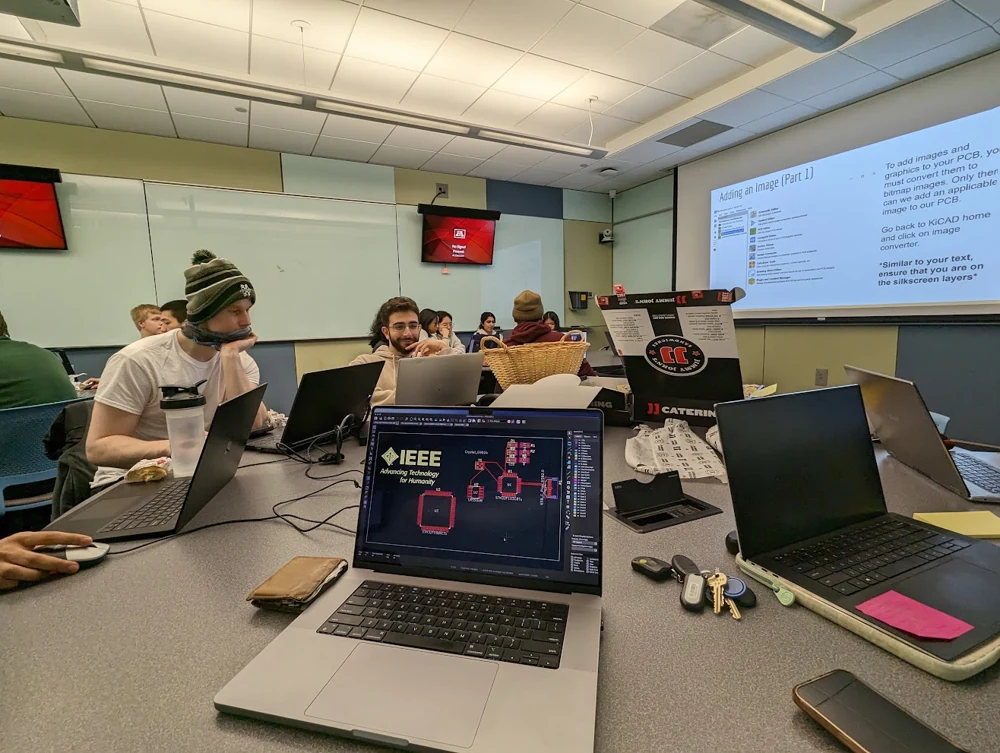

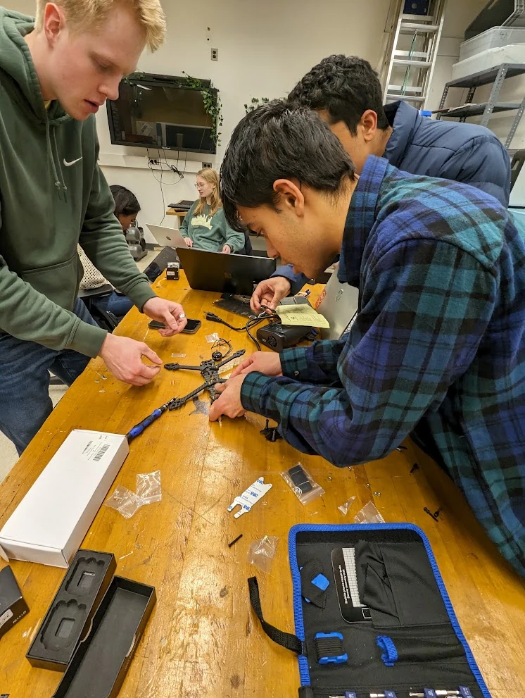

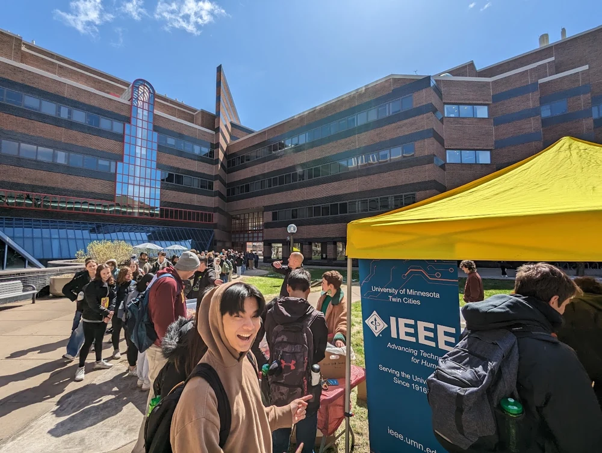
More IEEE photos / chapter life and demonstrations

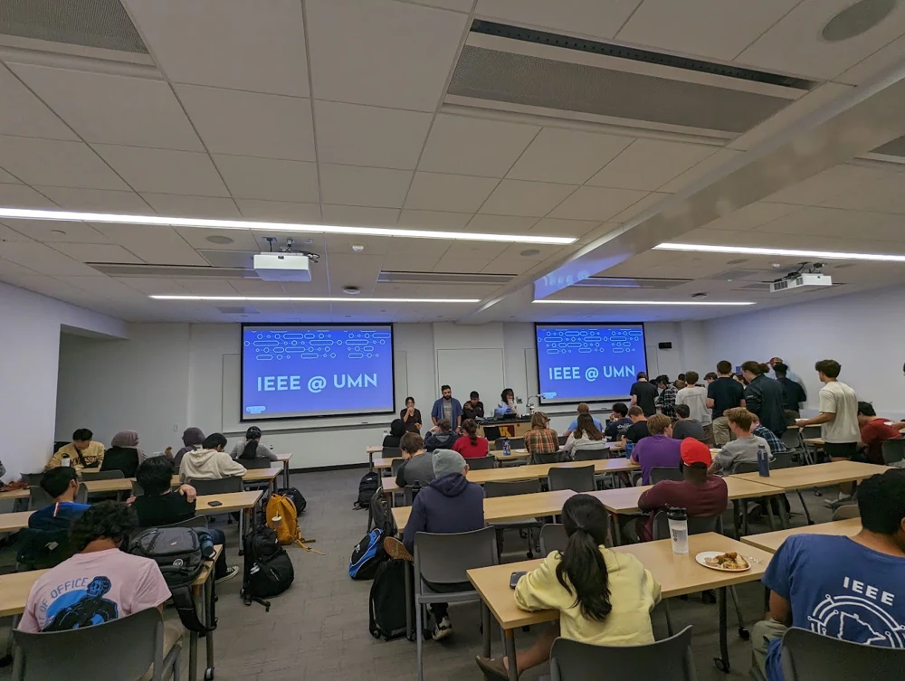

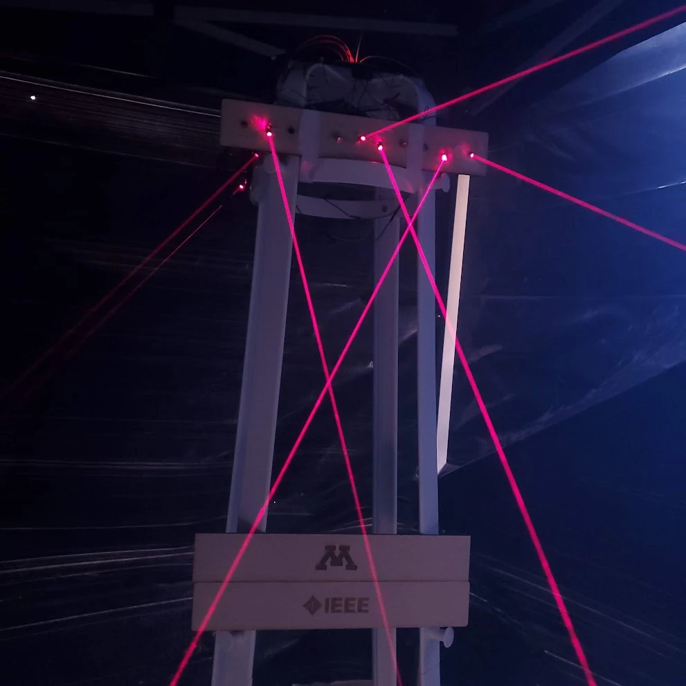

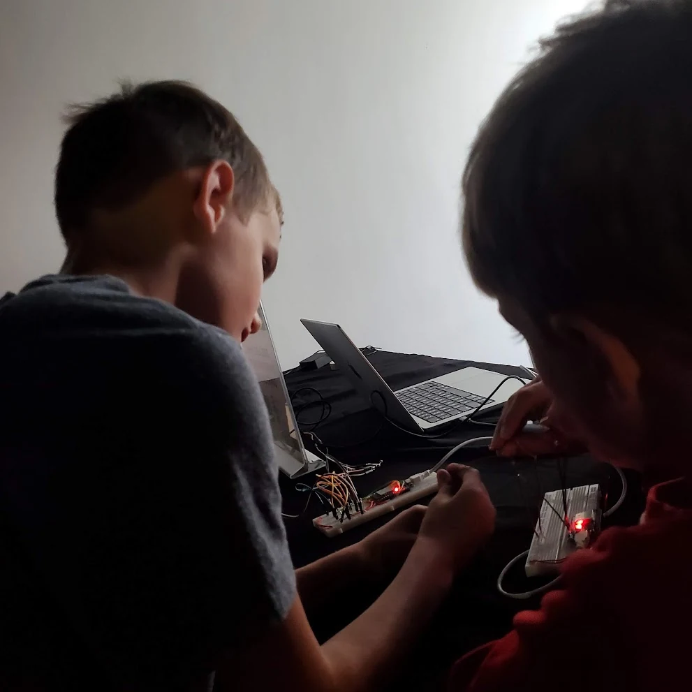

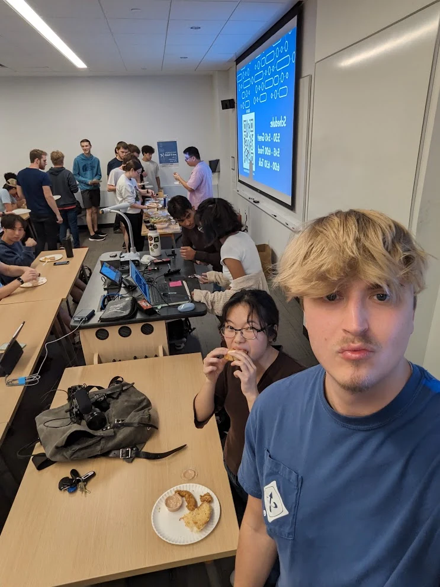

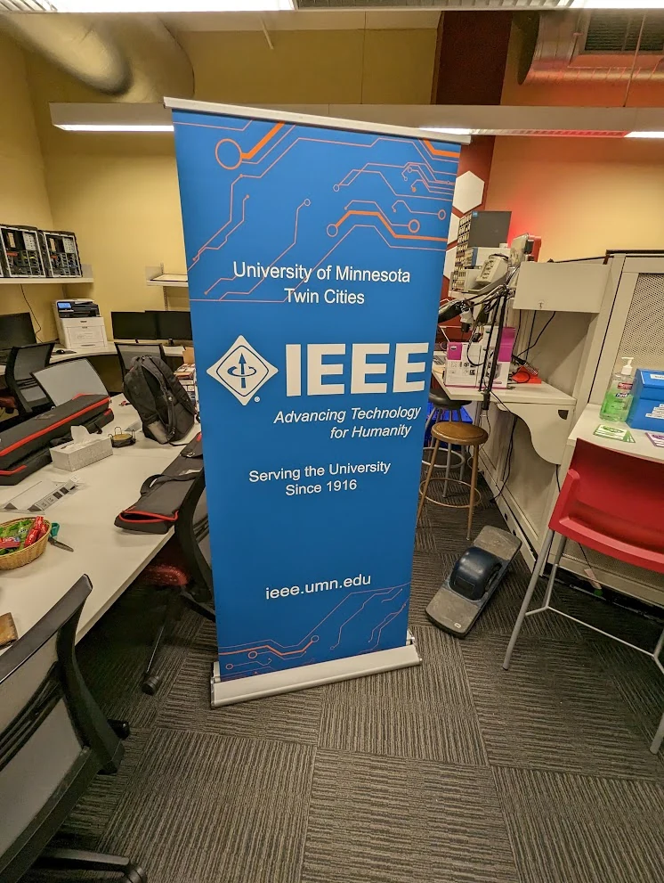

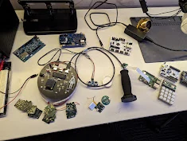
COMMUNITY REPAIR / 2026
Fixit Clinics
East Bay Makers Club / Berkeley, California
I volunteer at Fixit Clinics with East Bay Makers Club.
Held during the club's Open Build Nights, these community repair sessions bring people together to troubleshoot broken items, explore repairs, and share practical skills.